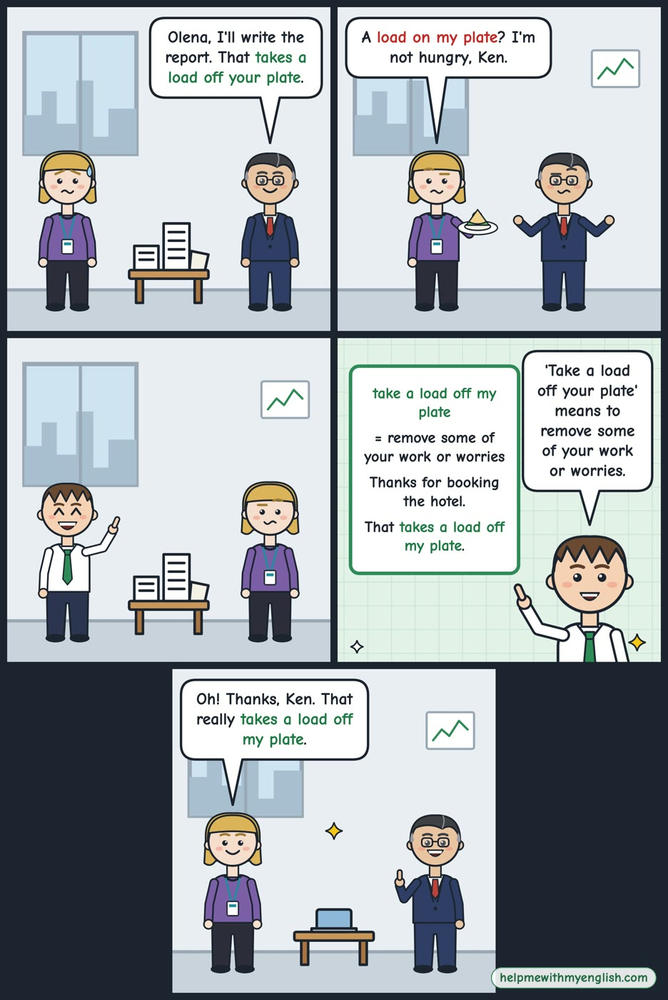

take a load off my plate
To remove a job or worry from someone so they have less to do.
Thanks for booking the hotel. That takes a load off my plate.
Tip: Use it as 'take a load off (someone's) plate' or 'that takes a load off my plate'; the 'load' is a job or worry, and it's often said as a thank-you.
Hear it in conversation
Workbook
1. What does it mean?
In this conversation, what does 'take a load off my plate' mean?
2. Fill the gap
My brother is handling all the paperwork for the house move, which really .
3. Choose the best reply
Amira: I'll call the insurance company and sort out the claim for you.
4. Your turn: speak
Tell me about a time when someone helped you and made a busy period easier.
Show an example answer
Last year I was moving to a new flat while also preparing for a big work deadline. My friend offered to organise the boxes and book the van, which really took a load off my plate. I could focus on my work and the move went much more smoothly than I expected.
Answer key: take a load off my plate
- 1. B. Remove a task so I have less to do
- 2. takes a load off my plate
- 3. A. Thanks, Amira, that takes a load off my plate.
- 4. Example: Last year I was moving to a new flat while also preparing for a big work deadline. My friend offered to organise the boxes and book the van, which really took a load off my plate. I could focus on my work and the move went much more smoothly than I expected.
See it in a comic
